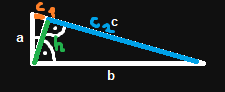
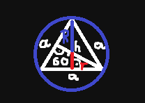

\(\alpha + \beta = 180^\circ\) kąty przyległe
\(\alpha = \gamma\) kąty wierzchołkowe
\(\alpha = \delta\) kąty odpowiadające
\(\alpha = \varepsilon\) kąty naprzemianległe
\(\gamma = \delta\) kąty naprzemianległe
$$\alpha + \beta + \gamma = 180^\circ$$ $$ a+b>c$$ $$a+c>b$$ $$b+c>a$$
$$c = c_1 + c_2$$ $$h = \sqrt{c_1 c_2} = \frac{ab}{c}$$
$$h = \frac{a \sqrt{3}}{2}$$ $$r = \frac{1}{3} h \text{ - promień okręgu wpisanego}$$ $$R = \frac{2}{3} h \text{ - promień okręgu opisanego}$$
Były również trójkąty podobne i twierdzenie Talesa, ale to chyba proste i nie trzeba.
Były te równości i nierówności na to że kiedy okręgi są styczne wewnętrznie, zewnętrznie a kiedy są rozłączne wewnętrznie, zewnętrznie itp. ale to chyba nie jest trudne żeby samemu wymyślić i raczej nie będzie bardzo potrzebne.
k - prosta styczna do okręgu o środku O
niebieski - kąt wpisany
czerwony - kąt dopisany
zielony - kąt środkowy
fioletowy - łuk okręgu, na którym oparte są w/w kąty
$$|PA|^{2} = |PB||PC| = |PD||PE| = |PF|^{2}$$